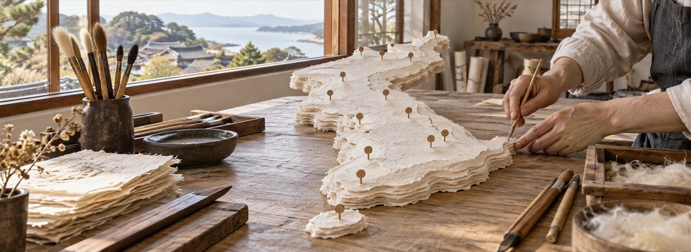
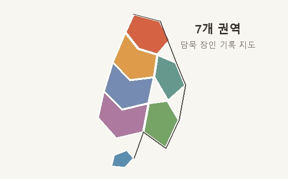
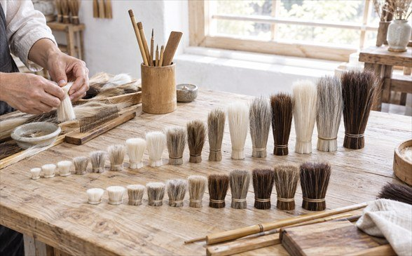
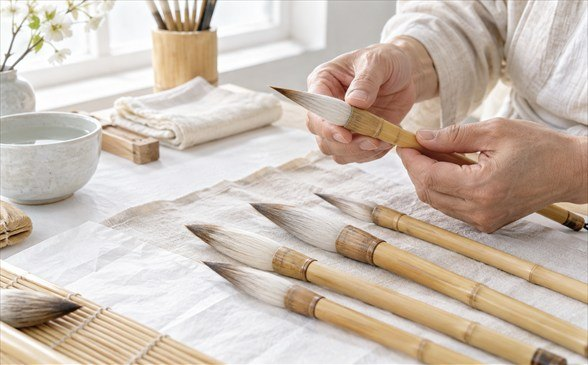

붓을 만드는 장인은 필장 또는 필공이라 불립니다. 재료의 성질을 읽고 쓰임에 맞춰 조합하는 기술이 세대를 건너 이어져 왔습니다.
조선의 법전과 실록에는 필장이 서울 관청에 딸린 장인으로서 왕실과 관아에서 쓸 붓을 만들었다는 기록이 남아 있습니다.
관청 소속 장인은 정해진 수량을 맞추는 한편 주문자의 요구에도 대응해야 했습니다. 남은 기록에는 재료 조달과 반복 노동을 함께 감당했던 제작자의 생활이 간접적으로 드러납니다.
지도에는 담묵문방박물관이 조사·정리한 일곱 공예 권역을 표시했습니다. 각 이름과 연도는 권역마다 작업 기록을 처음 남긴 시점과 참여 장인의 활동 내역을 기준으로 정리했습니다.
새 필기구가 퍼지고 기계로 만든 값싼 붓이 들어오면서, 붓을 손으로 매는 사람은 크게 줄었습니다.
오늘날 소수의 공방이 손작업을 이어 가고 있어 공정 이름뿐 아니라 실패를 가려내는 감각까지 기록할 필요가 커졌습니다. 이 전시는 재료표와 작업 일지를 통해 전승이 이어지는 방식을 설명합니다. (전승 공예 관련 용어는 현재 기준으로 표기했습니다.)

처음에는 재료 이름만 외우며 붓을 만들었지만 결과가 일정하지 않았습니다. 서한결은 털의 산지보다 굵기·곡률·흡수량을 직접 측정하는 일이 중요하다고 보고, 들어온 재료마다 표본 카드를 만들었습니다.
그는 선배 장인에게 배운 정모 순서를 바탕으로 하되, 재료가 도착할 때마다 습도와 탄성을 따로 적었습니다. 경험을 숫자와 사진으로 남기는 습관은 공방의 교육 방식이 되었습니다.
2007년 서한결은 오래된 인쇄소가 모인 골목에 작은 작업실을 열었습니다. 가까운 기록관과 표구사의 요청을 들으며 보존 작업에 알맞은 붓의 크기와 탄성을 시험해 왔습니다.
서한결은 2001년 동네 공부방에서 버려진 학습용 붓을 고쳐 주며 제작을 시작했습니다. 종이 보존가들이 오래 써도 가루가 적게 생기는 붓을 찾는다는 말을 듣고, 염소털과 토끼털의 비율을 달리한 기록용 혼합모필을 연구하게 되었습니다.
서한결은 같은 재료라도 길이와 굵기에 따라 먹의 흐름이 달라지는 점을 표로 남겼습니다. 수십 차례 배합을 바꾼 끝에 가는 기록선과 넓은 바림을 한 자루로 오갈 수 있는 혼합모필을 완성했습니다.
박물관 보존팀은 여러 배합의 마모 상태를 비교했고, 서한결은 사용자의 필압 기록을 받아 심소의 굵기를 다시 조정했습니다. 연구 결과는 재료표와 시험지, 실패작까지 함께 남기는 방식으로 정리했습니다.
완성된 기록용 혼합모필은 결과보다 개발 과정을 보여 주는 교육 자료가 되었습니다. 현재도 수업 참가자의 시험선을 모아 다음 제작에 반영하고 있습니다.


배냇머리는 아이가 태어날 때부터 지닌 첫 머리카락을 가리킵니다.
배냇머리는 태어나 처음 자른 뒤에는 다시 얻을 수 없는 머리카락이라, 한 사람의 시작을 기억하는 재료라는 뜻이 큽니다.
박물관 방문객이 첫 머리카락을 안전하게 보관할 방법을 묻자 서한결은 분리형 보관통이 달린 기념붓을 설계했습니다. 붓은 실제 사용보다 가족의 짧은 기록을 함께 간직하는 물건으로 구성했습니다.
옛 기록에는 선비 집안에서 아이의 배냇머리로 붓을 매어 과거 급제를 빌었다는 이야기도 전합니다.
오늘날에는 아이의 첫 시간을 간직하려는 가족이 배냇머리붓을 기념품으로 주문하기도 합니다.
담묵문방의 계보는 여러 세대가 재료표와 작업 일지를 함께 살피고, 앞선 기록을 다음 제작에 반영하며 기술을 보완해 온 흐름을 정리한 기록입니다.